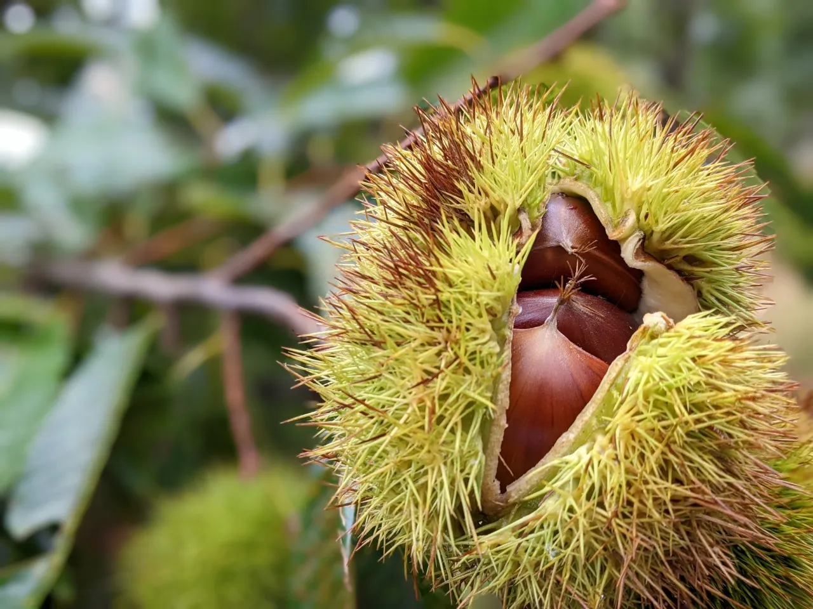
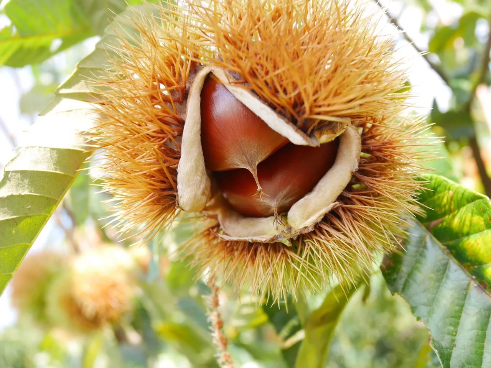
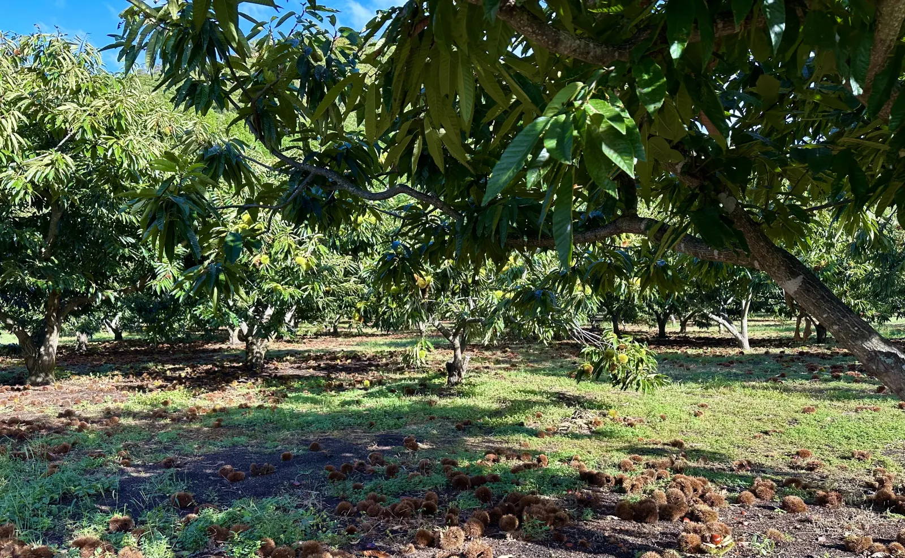
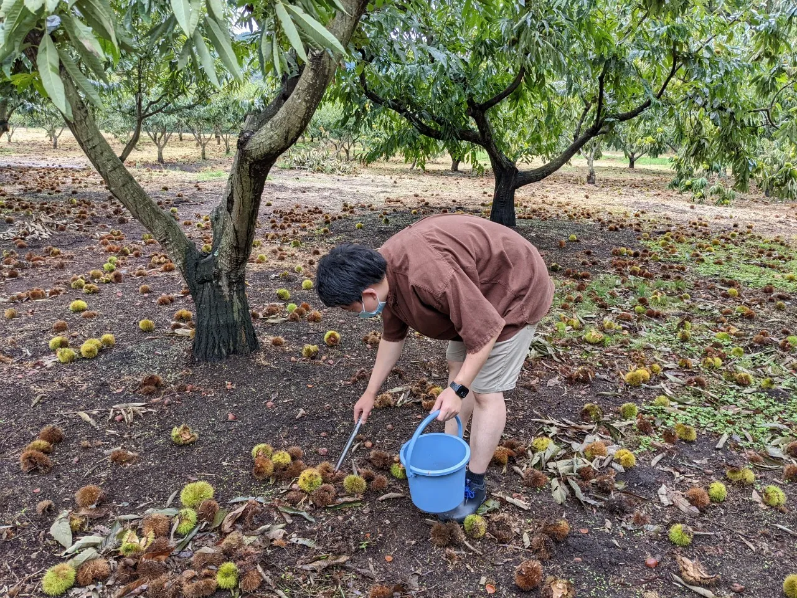
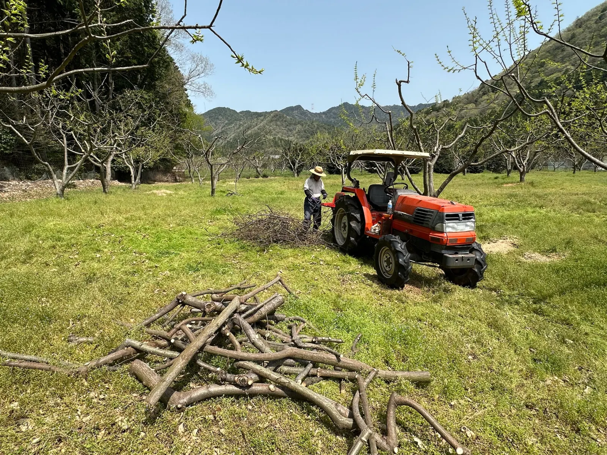
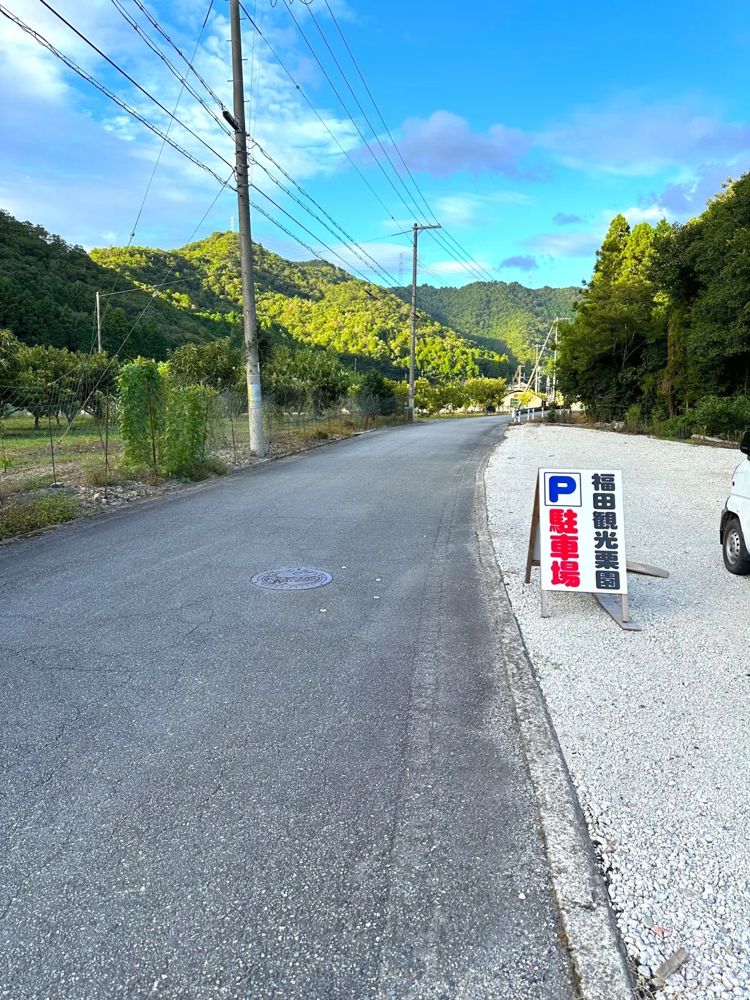
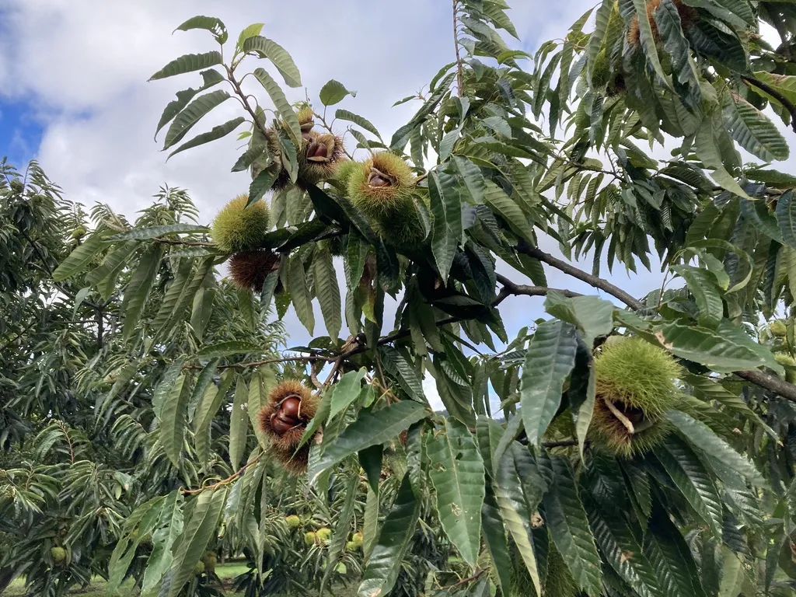
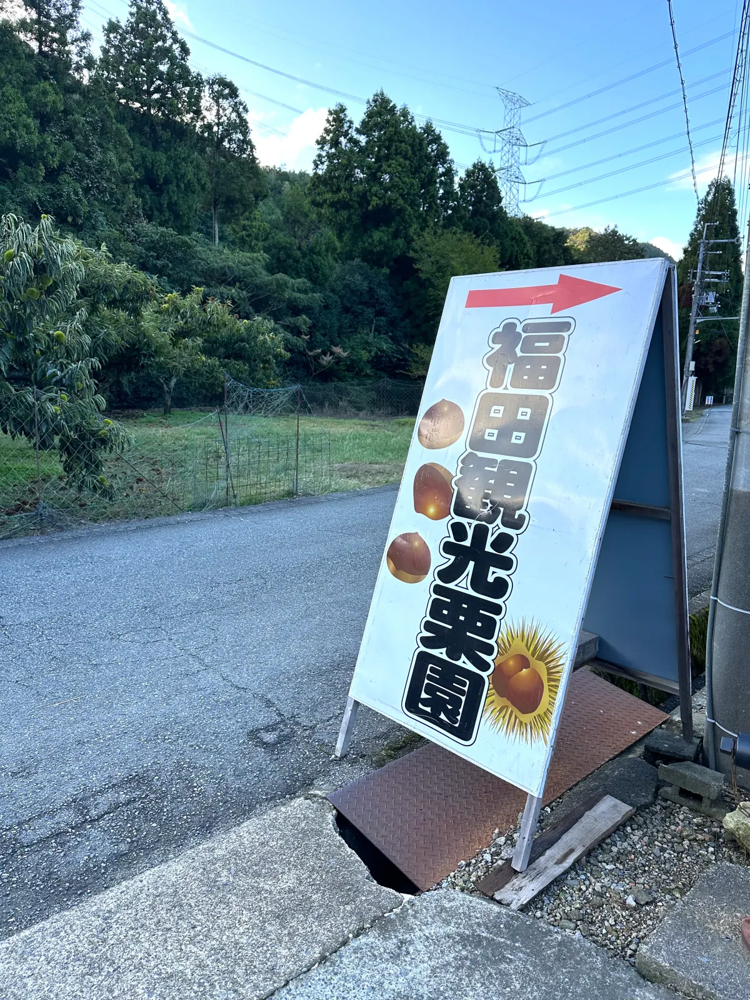

受付時間内に、そのままお越しください。
※団体の方はご予約をお願いします。
Story
栗園の思い
福田観光栗園は、丹波の自然とともに四代にわたって栗を育ててきました。
曾祖父の代から続く「おいしい栗を育てたい」という思いは、今も変わりません。
これからも、皆さまに丹波の秋を楽しんでいただけるよう、一本一本大切に育てていきます。
栗園について
屋号: 福田観光栗園
代表: 横田 大成
創業: 昭和50年ごろ

今年の開園に向けて、栗園の準備を進めています。

Tamba Chestnut Picking
兵庫県丹波市の自然に囲まれた観光栗園で、のんびり栗拾い。 ご家族やご友人と、秋のひとときをお楽しみください。
受付時間内に、そのままお越しください。
※団体の方はご予約をお願いします。
お支払いは現金でお願いします。
お車で気軽にお越しください。
栗の生育状況により、開園時期が前後することがあります。
平日 9:00〜14:00 / 土日祝 9:00〜12:00
About
ご家族でも、ご夫婦でも、お一人でも。自分のペースで楽しめます。
福田観光栗園は、兵庫県丹波市で栗拾いを楽しめる、四代続く観光栗園です。
園内をのんびり歩きながら、落ちている栗を探してみてください。
お子さま連れのご家族、ご夫婦、ご友人同士、お一人でのご来園も大歓迎です。 丹波の秋を、ゆっくりお楽しみください。
受付時間内に、そのままお越しください。団体の方はご予約をお願いします。
受付で栗拾いの方法をご案内します。分からないことは気軽にお声かけください。
丹波の空気や景色を感じながら、思い思いにお過ごしください。

Gallery
栗園の景色や栗拾いの様子を、写真で少しのぞいてみてください。




Steps
受付からお持ち帰りまで、流れはとてもシンプルです。
Pricing
料金はこちらです。
小学生以上、お一人500円です。未就学児は無料です。
拾った分だけ、受付で量ってお支払いください。
※ 令和8年度の料金です。
焼き栗 1カップ 200円 / 栗ご飯 1つ 500円 / 栗の皮むき 1回 500円（1回につき1kgまで）
Take Home Guide
栗ご飯、ゆで栗、おすそ分け。冷凍して、あとで楽しむこともできます。 食べ方を思い浮かべながら、お好みの量を拾ってください。
Before You Visit
服装や持ち物など、来園前に少しだけ見ておいてください。
園内のお手洗いは、男女それぞれ1か所です。 混み合うこともあるため、道の駅やサービスエリアで済ませてからのご来園がおすすめです。
ペットも一緒に入園できます。ほかのお客様へのご配慮やフンの処理をお願いします。 栗のイガや斜面がありますので、ペットの足元にもご注意ください。
お弁当の持ち込みもできます。園内でゆっくりお過ごしください。
個人の方は予約なしで大丈夫です。受付時間内に、そのままお越しください。 団体の方は、事前にご予約をお願いします。 お出かけ前にInstagramで、開園状況や園内の様子をご確認ください。
Story
福田観光栗園は、丹波の自然とともに四代にわたって栗を育ててきました。
曾祖父の代から続く「おいしい栗を育てたい」という思いは、今も変わりません。
これからも、皆さまに丹波の秋を楽しんでいただけるよう、一本一本大切に育てていきます。
屋号: 福田観光栗園
代表: 横田 大成
創業: 昭和50年ごろ

Access
ご来園の際は、Googleマップをご利用ください。
